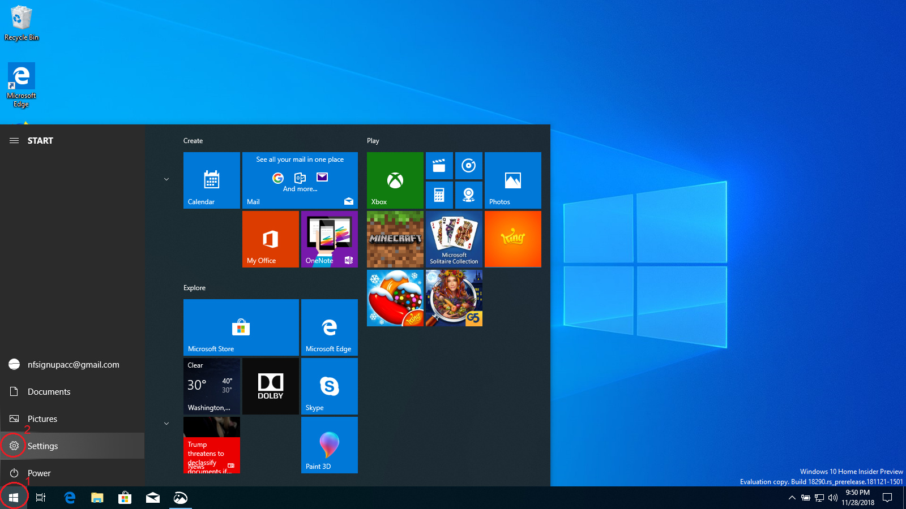
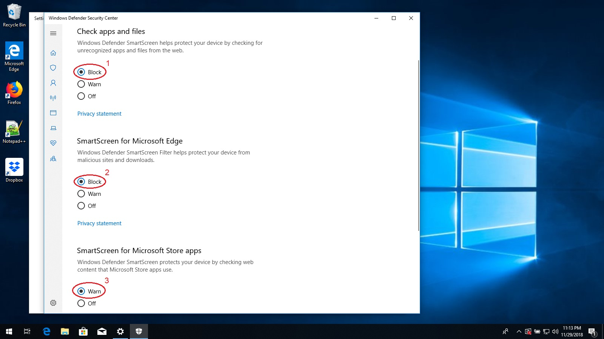

Enabling SmartScreen
SmartScreen is a security feature included with Windows that monitors programs and web sites to detect when they
try to access suspicious files or web servers. SmartScreen can detect and prevent attempts to install viruses or
steal personal information by malicious web sites. SmartScreen is currently turned off. To turn it on, follow
these steps.
-
First, click on the start button and then the settings gear.

-
When the Settings app opens, click on the "Search" box at the top and type in "smartscreen".
-
Below the search box, the words "App & Browser control" will appear. Click these words.

-
A new window will open with the title "Windows Defender Security Console".
-
Look for the words "Check apps and files". Below them there should be three check boxes labeled "Block",
"Warn", and "Off". Click on "Block".
-
Look for the words "SmartScreen for Microsoft Edge". Below them there should be three check boxes labeled
"Block", "Warn", and "Off". Click on "Block".
-
Look for the words "SmartScreen for Microsoft Store apps". Below them there should be two check boxes
labeled "Warn" and "Off". Click on "Warn".

-
For each of these buttons, you may see a message that says "Do you want to allow this app to make changes to
your device?". If this message appears, then press "Yes". If it does not appear, then skip this step.
-
Close the "Windows Defender Security Console" and the Settings app.
Congratulations, SmartScreen is now protecting your computer!